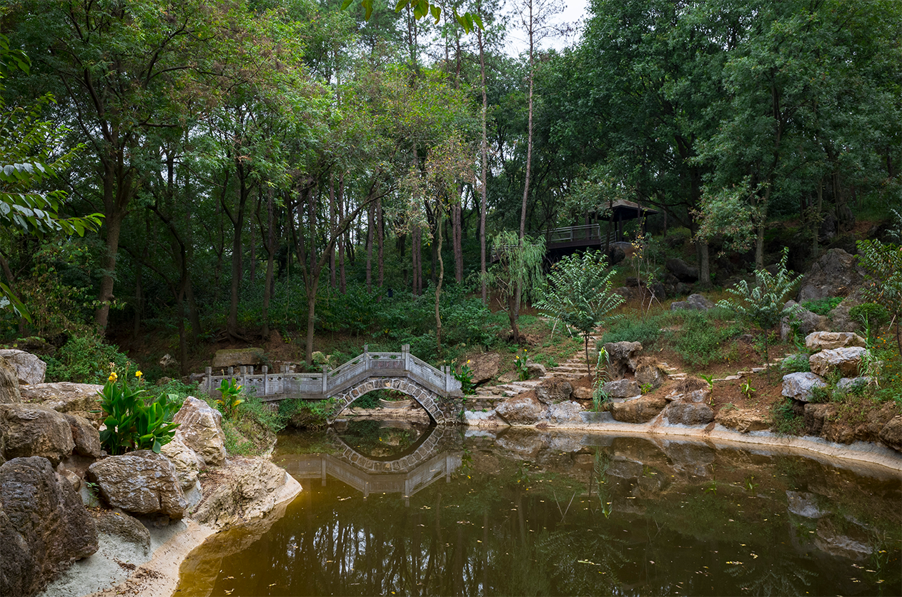

八阵石林
“八阵石林”是鹿门山苏岭石中的一片，苏岭石属于远古石灰岩地质结构遗存，有5--6亿年的历史，面积约1万平方米。而“八阵石林”又是苏岭石中的一块小缩影，这里的山石因为地质原因造型独特、千变万化，有的像龙脊，有的像鳄鱼，有的像骆驼，而这些怪石相互勾连、争峰斗角又在此处形成了一个深潭。相传当年庞德公亲身传授诸葛孔明的“八阵图”即是在此处教习的。
2009年以前，这些山石大部分还被泥土和植被埋于地下或浅露真容，后来经过艰苦的、大量的人工挖掘和清理，展现在旅客眼前的这1万多方正是唐宋八大家曾巩笔下描述的大名鼎鼎的苏岭石。苏岭石无论是从景观价值方面来讲，这样的冠盖石林密度之大全国都属罕见；从人文价值方面来讲，苏岭石在中国石文化界也是非常著名的，可与太湖石相提并论。